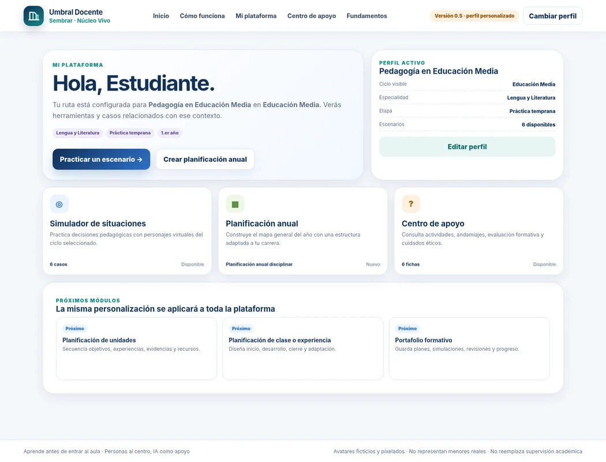

Escucha Viva
Simulador formativo para preparar entrevistas, practicar escucha y revisar decisiones en escenarios ficticios.
- Casos simulados
- Entrevista guiada
- Retroalimentación
Experimentación aplicada · Acceso público
Núcleo Vivo Lab convierte situaciones educativas y organizacionales en experiencias digitales para observar, decidir, recibir retroalimentación y volver a intentar.
Explorar pilotosCatálogo
Cada producto tiene un propósito formativo propio. Los estados indican su nivel actual de disponibilidad pública.
Simulador formativo para preparar entrevistas, practicar escucha y revisar decisiones en escenarios ficticios.

Práctica pedagógica con perfil por carrera, planificación y 18 escenarios para aprender antes de entrar al aula.

Laboratorio de decisiones con ocho empresas ficticias, evidencia, restricciones, directorio y consecuencias locales.
Cómo trabajamos
Los pilotos están diseñados para practicar sin involucrar casos ni personas reales.
Umbral Docente y Empresa Viva guardan el avance únicamente en el navegador utilizado.
Los resultados orientan la reflexión; no certifican desempeño académico o profesional.